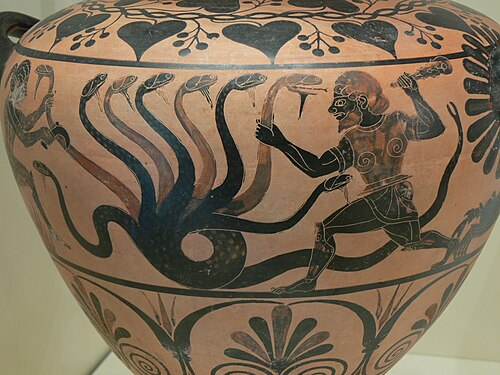

Greetings! This website is made to be a little of what I call a tiny "encyclopedia" of dragon types in different mythologies and from wich regions they came from. This would hopefully include the date, century, and the stories behind each version of said dragon depending on the folklore. Some are even told in fairytales, and with interesting inclusion with the vast and ancient greek mythology!
It started with several first ideas that included mainly personal goals, and this topic was my chosen one, for I have written it for my very own use of inspiration for storywriting and fantasy creation, a worldbuilding that could be related with real history and the "religions" that ancient people used to "believe" at this era, this specific topic of it being about "dragons" is because of my inspiration from an artist that made an entire story based on korean mythology folklore, about serpentine water dragons named "Imoogi". Also, the comic and story books created by several other artists that were based on greek gods and mythology, involving such characters like Hades, Persephone, Zeus, Heracles, and etc. It is such complex of a large, intertwined lore of gods and monsters. And in personal sense, This serves as an inspirational opportunity to finally learn the origin of those stories from about centuries BC, and get to understand the complex origin of fantasy before it was being modernized by the simpler versions of fantasy.
Rule: Only do old-era origins, modern versions excluded aside from minor mentions.
Anyways, this website is created with one of the most famous dragon types I've chosen, or by wich picks my fancy most. Unsure of wether I'd give it future updates for more types and summaries, but today-me hopes that future-me would continue on adding to this website!
In this website, the topics added so far:
A hydra, also called "Learnean Hydra", is described as a multi headed, serpentine monster. In mythology, its lore is that it came off as an offspring from "Typhon" and "Echidna". Bred purposefully by Hera, a greek goddess and queen of all gods, In order to kill Hercules; wich in legends speak that she's jealous of.
Before I change the subject! Picture below is one of artistic examples of how people imagined "Hercules" slaying a hydra,

Said to be slain with sword and fire; with the help of his nephew, Lolaus.
Well, because of ancient greek legends say that the hydra has the ability of head regeneration; meaning that every head being chopped down, it regenerate two more in the place of the cut. Meaning that, a sword alone was not enough to slay a hydra.
So, with Lolau's assistance, he suggested that using fire on an open wound of the head would trigger a term called "Cauterization", scientifically said on general terms is that cauterization means sealing the wound tissue shut to stop bleeding. On the hydra crisis situation, it meant using fire to dry blood straight onto the wound before the regeneration occurs, sealing the ability to make two more heads from an open wound.
In this strategy, Hercules and Lolaus teamworked that by each head one cuts, one other uses his torch to seal a wound, until one head was left; the "immortal head". Unlike the other heads, this one was central and stubborn to kill. When Hercules managed to cut off, he buried the immortal head underground and prevent it from re-attaching to it's body until it turns to rot.
So, in the middle of the battle when Hera saw that Hercules was coming close to vistory against the hydra, she sent off a crab monster to assist it. Both monsters failed miserably.
After the battle, Hera picked up the remnants of the crab's body, honoured her monster's loyalty to help by placing it in the vast dark blue sky, creating the zodiac constellation "Cancer", from the battle with the learnean hydra.

An infamous mythology of a giant serpent compared to other serpentine creatures, falak is often symbolized by the arabs as a primordial chaos in middle eastern folklore, a creature that existed before human creation (according to mythology). it is described with fiery red scales that glow with the intensity and heat of the hellfire.
The falak is a mythical creature that took part in the collection of a famous story "one thousand and one nights", this collection of books is originated from India, Persia, and Arabia, said to be "compiled" (meaning progressed through before being considered oficially finished) from the eighth to eighteenth centuries (750 - 1835 CE). more precisely, done on the year 1888 including all of it's linguistic translations and versions from the years before, starting with the syrian language in 1593 CE.
Back on topic, according to "one thousand and one nights", the serpent falak possesses enough power to destroy all creation from it's "seventh hell"—the deepest stage of hell—position, but even this creature was bound under Allah's will and fear for its creator. This makes the serpent a powerful symbol of how even the most destructive forces ultimately submit to divine will. Personally, this makes me wonder is this considered a being of loyalty despite being made for evil? Myths really are interesting!
With the falak's destructive capabilities, it was said it could eat and swallow every cosmic creation including earths and heavens, and make grounds trumble under its one momvement. However, it choses to restrain this potential all under its fear for allah's power. In mythology, it even says that the falak will reveal itself during judgement's day and eat the sinners as part of divine punishment. Though, as it is not mentionned to be in the Holy Quran inclusion, Arab writers on recent eras claim that this myth is only a myth and a story, not to be seriously believed on. While other writers from less recent eras, thought that the belief of this snake is completely optional though possible, in their perspective.
On and about it's physical appearance; its scales, red and hot with the hellfire's burning heat, said to be resistant and immune to all fires, giving it the freedom to channel these very scorching flames through its body into the upper realms. Suprisingly, this serpent also has knowledge of the deepest cosmic secrets, according to the arabian mythology, like an eternal wise being whilst also being highly destructive.
Oh and after some more research; this snake is NOT considered to be "loyal" for Allah, as of it being fearful of its creator should not be the same term as of proof of loyalty, but perhaps moreso self-control and fear from greater power whitout really any intented goodwill.
Referrance to celestial orbits; because this term first appeared in a pre-eslamic (before islam) era, it was inspired from the Arabic astronomy with that reference. One astronomical scholar, "Al-Biruni" from the tenth century used "falak" to describe the orbit of planets and stars.
One of many types of dragons, Lindworms are described as a serpent with forelimbs only, originated in the central europe countries (mainly) on the eleventh century, said to be called a Nordic Folklore. sometimes other lindworms are said to have wings depending on the version that appears in the legends. Can also appear limbless, like in the swedish folklore. This creature is also described to be very flexible, saying that despite not having wings, this creature had its very own strengths whitout needing one!

According to legends, the legend of the lindworm talks about a cursed prince that married a shepherd's daughter to become human. This is a legend of the good lindworm to be associated with luck, and the bad lindworm legend that attacks villages in sight and eat humans. In other legends—like the "Ouroboros" and "hoop snake" in western and american folklores respectfully—where the lindworm swallows its own tail to roll and pursue humans.
Apparently, the Lindworm was given many names from different languages. Like:
The actual original name is uncertain, theorized to be possibly based on the "Proto-Germanic" form "Linpawurmiz"
According to the Nordic folklore, it is said that whatever lies under a lindworm will grow at the rate of the snake. Because of that, kingdoms decided to do a method called "Brooding over treasure", where they put their treasures on the lindworm's nest or in the cave and as it "broods" (meaning laying eggs) over the treasures as they both grow, so the humans become richer.
Greek Mythology: Hesiod, a famous greek poet for the people in his era around 700 years BC, he was an important mythologist for the greeks that they called him the "Father of Greek didactic poetry", and he wrote poems and stories that include the hydra story from before! And suprisingly, even though it's been more than a couple thousands years since his time, his work still survives as it marked the whole history of mythology lovers, that includes especially modern fantasy lovers and archeologists.

The influence of his works were said to be critical in organizing Greek mythology, as it has also affected the later philosophers like "Plato" and "Aristotle". His most famous surviving works include "Works and Days", "Theogony", and "Shield of Heracles".
Greek and Roman mythology: Unlike how we call "earth", The greeks called their earth Gaia. They say that "she", a personification of earth Gaia, also called "Mother Earth", and that she gave the very birth of the sky; Uranus, as well as the mountains and seas. This, was also included in Hesiod's mythology in "Theogony"; saying that Gaia is the first "tangible entity to emerge from the primordial void—chaos—and be considered the mother of all, including the titans, giants, and even gods.
Meanwhile, there's Roman mythology; very ressembling to the greek mythology—but not exactly! For them, they called the earth "Terra". In the latin language, Terra signifies the physical earth, land, or ground. Again, she is a personified mother earth, but her symbolism is different; she represents the solid ground and fertile, nourishing land. In roman mythology, the sky was not called Uranus but instead "Caelus", and the connection to that is that Terra was "born from Chaos alongside Caelus".